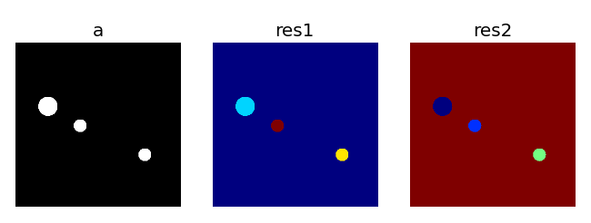

The watershed algorithm (see 1) is used to split an image into distinct components.
Suppose that we have the following image, composed of three whites disks (pixels of value 1) and a black background (pixels of value 0). We want to obtain a new array where each pixel is labeled with the index of the component to which it belongs, that is a segmentation of the orginal array, as shown in the image below. We will use the watershed algorithm provided by scipy.ndimage, scipy.ndimage.watershed_ift.
#!python
>>> # Create the initial black and white image
>>> import numpy as np
>>> from scipy import ndimage
>>> a = np.zeros((512, 512)).astype(uint8) #unsigned integer type needed by wate
rshed
>>> y, x = np.ogrid[0:512, 0:512]
>>> m1 = ((y-200)**2 + (x-100)**2 < 30**2)
>>> m2 = ((y-350)**2 + (x-400)**2 < 20**2)
>>> m3 = ((y-260)**2 + (x-200)**2 < 20**2)
>>> a[m1+m2+m3]=1
>>> imshow(a, cmap = cm.gray)# left plot in the image above
The watershed algorithm relies on the flooding of different basins, so we need to put markers in the image to initiate the flooding. If one knows approximately where the objects are, and there are only a few objects, it is possible to set the markers by hand
#!python
>>> markers = np.zeros_like(a).astype(int16)
>>> markers[0, 0] = 1
>>> markers[200, 100] = 2
>>> markers[350, 400] = 3
>>> markers[260, 200] = 4
>>> res1 = ndimage.watershed_ift(a.astype(uint8), markers)
>>> np.unique1d(res1) # pixels are tagged according to the object they belong to
array([1, 2, 3, 4], dtype=int16)
>>> imshow(res1, cmap=cm.jet) # central plot in the image above
If you don’t know where to put the markers, and you know the minimal size of the objects, you can spread a lot of markers on a grid finer than the objects.
#!python
>>> xm, ym = np.ogrid[0:512:10, 0:512:10]
>>> markers = np.zeros_like(a).astype(int16)
>>> markers[xm, ym]= np.arange(xm.size*ym.size).reshape((xm.size,ym.size))
>>> res2 = ndimage.watershed_ift(a.astype(uint8), markers)
>>> res2[xm, ym] = res2[xm-1, ym-1] # remove the isolate seeds
>>> imshow(res2, cmap=cm.jet)
<matplotlib.image.AxesImage object at 0xf1fd1ac>